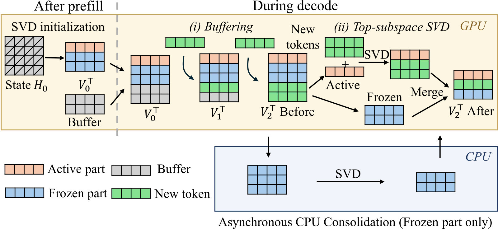
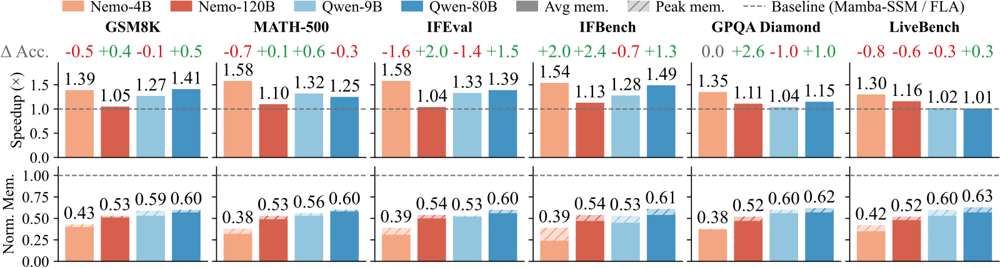
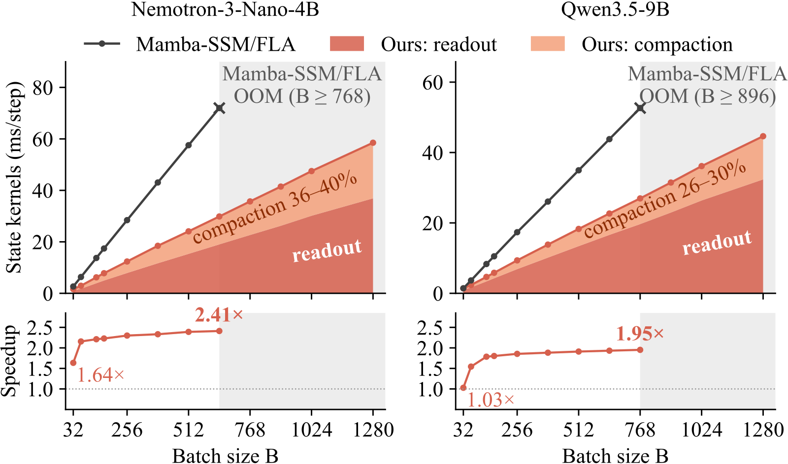

目录 · 5 节
1一个 128×128 的 state，99% 的输出只靠前 2–16 个方向2每步重做 SVD 要 4000 ms，所以只动头部、攒够再动3只动头部会让尾部越堆越多，于是交给闲着的 CPU4state 显存约减半，端到端平均快 1.25×5自适应秩和 frozen 尾部，在 32K 生成后仍站得住SinkState 这篇论文的判断是：linear attention 的 recurrent state 只靠少数几个方向承载信息，所以可以在 decoding 全程按各头实际的秩维护 SVD 因子和一个缓冲项，少数头仍回退 dense，显存和每步读写一起省下来。 Hybrid 模型的大部分层是 linear attention，每个头为每个请求维护一个固定大小的矩阵（recurrent state），每生成一个 token 都要把它完整读一遍、写一遍；batch 一大，这部分读写就主导每步耗时。现有的低秩压缩要么在服务前做一次，要么事先选定保留哪些方向，可 state 每步都在被改写。论文测到，最多 128 个分量里只要前 2–16 个就能还原 99% 的输出，于是在解码过程中增量维护低秩因子。在单张 RTX PRO 6000 上的四个 hybrid 模型上，recurrent state 的峰值内存平均降到对照的 0.52，端到端 decoding 平均快 1.25×，准确率变化在 −1.6 到 +2.6 点之间，没有一致方向。
Hybrid 模型（Qwen3.5、Nemotron 3 这一类）的大部分层是 linear attention，只夹着少数 full attention 层。每个 linear attention 头给每个请求维护一个固定大小的矩阵，叫 recurrent state。以 Mamba2 为例，每来一个 token，这个矩阵先整体乘一个衰减系数，再加上新 token 的 （GDN 改了遗忘方式，还给写入加了门控，但每步写入仍是一个秩 1 的项）；输出则是用 query 去乘这个矩阵，论文把这一步叫 readout。state 的大小不随上下文变长，这是 linear attention 比 full attention 省显存的地方。
麻烦在于，这个矩阵每个 decoding step 都要被完整读一遍、写一遍。示意：一个头的 state 是 128×128，也就是 16,384 个 FP32 数；生成一个 token，readout 要读完这 16,384 个数，更新又要把它们全部写回。真实规模更大：Nemotron-3-Nano-4B（下文 Nemo-4B）在 batch 128 时同时持有约 258k 个 80×128 的 state。batch 每翻一倍，这部分读写流量也翻一倍，很快就主导了每一步的耗时。
最自然的想法是做低秩压缩，可现有路线都卡在某一步。SVD 压缩权重和 KV cache 都是在服务前做一次，因为那些张量要么固定、要么只追加；state 却每步都被改写。ReplaySSM 一类做法先攒住最近的输入、过一段再写回，省掉了大部分写，但在上面那个头里，每步 readout 仍要读完 16,384 个数。SketchSSM 只近似读，写仍是全量。state pruning 和离线校准的投影则事先选定保留哪些方向、保留几个，换一段没见过的输入，这个选择不一定还对。
一个 128×128 的 state，99% 的输出只靠前 2–16 个方向
作者先量了三个模型的 q、k、v：Qwen3.5-9B（GDN 层）、Nemotron-3-Nano-4B（Mamba2 层）、Kimi-Linear-48B（KDA 层）。在 PG-19 书籍文本上，多数情况下前 8 个方向就占了 q、k、v 能量的 73–88%。换成随机 token，集中得更厉害，前 8 个方向占 87–96%。这说明换成没有语义的输入，能量同样集中在少数方向上。作者认为这种集中不依赖语义，把它叫 linear attention sink。
既然每步写进 state 的 大多落在这几个方向上，state 本身也就被这几个方向主导。图 2 是直接证据：最多 128 个分量里，前 2–15 个就占了 state 99% 的能量，前 2–16 个就能还原 99% 的输出 。这意味着 dense state 里绝大多数数字是冗余的，每步却都被完整读写。

把冗余换成存储量来算，回到示意的 128×128 头：按秩 r 存 SVD 因子，要存 和 各 128×r，共 256r 个数。若这个头的秩是 8，只需 2,048 个数，是 dense 的 1/8，readout 读的量也同比例变少。秩到 64 时两边打平，超过 64 就不如 dense，这一点后面会用到。
每步重做 SVD 要 4000 ms，所以只动头部、攒够再动
因子形式好，难在每步 state 都在变。最直接的做法是每步重算一遍精确 SVD。Nemo-4B 在 batch 128 时对全部 258k 个 state 做一次精确 SVD 约要 4000 ms，而一个 decoding step 只有 20–30 ms，差了两个数量级以上。离线校准一组固定的低秩基，作者认为既不通用也扩展不了。
作者的出路来自另一个观察：新来的 、 主要落在已有 state 的前几个分量上。在 Qwen3.5 和 Nemotron 上，排第一的分量就接住了新向量 18–65% 的能量；第 16 名以后的分量，接住的比随机方向还少。于是更新时只需动头部。
SinkState 把每个 state 的分量分成两段。active part 是奇异值最大的前 8 个分量，frozen part 是剩下的。新 token 先进一个长度 K=8 的 buffer，攒满才合并，这次合并叫 compaction。compaction 只把 active part 和 buffer 拼起来做一个小 SVD，frozen part 原样放回，最后把合并后低于 的分量丢掉（ 是阈值， 是最大奇异值）。在示意的头上，拼起来的是 8 个 active 分量加 8 个 buffer 项，借 Brand 的 incremental SVD 只需分解 16×16 的核心矩阵，不碰 128×128 的整块。 Hoot 说

局部拼接后存下的（示意）
- 分量 1
- 方向 u·vᵀ，权重 2
- 分量 2
- 同一方向 u·vᵀ，权重 1
- 丢弃线
- 0.1×2=0.2，两个都留下
- 存下的分量数
- 2
两列 U 同向，权重只是系数，不是整块的奇异值。
对整块做精确 SVD
- 实际矩阵
- 2·u·vᵀ + 1·u·vᵀ = 3·u·vᵀ
- 奇异值
- 3 和 0
- 丢弃线
- 0.1×3=0.3，0 被丢掉
- 真实秩
- 1
CPU consolidation 在 frozen part 上做的就是这一步。
对照：两个方向互相垂直（示意）
- 分量
- u₁·v₁ᵀ 权重 2，u₂·v₂ᵀ 权重 1
- 精确 SVD 的奇异值
- 仍是 2 和 1
- 存下的分量数 = 真实秩
- 2
只有方向两两垂直时，存的权重才等于奇异值。
示意：两个分量都是同一个方向 u·vᵀ，权重分别是 2 和 1，阈值比例取论文小例子里的 ε=0.1。小 SVD 只管 active part 和 buffer，拼回 frozen 后 U 的各列不保证两两垂直，所以存下的权重不一定是整块 state 的奇异值。
出处
论文 §3.2 Observation 2（只用 local SVD 时 frozen 里会累积方向相近的分量，存储秩大于精确 SVD）；§4.3 CPU consolidation 与图 7(a)（frozen 上做精确 SVD 合并冗余分量，秩从 3 降到 2）
| 时机 | 输入 | 操作 | 产出 | 在哪跑 |
|---|---|---|---|---|
| prefill 结束 | dense state | 分块 randomized SVD，某块出现低于 的奇异值就停 | 每个头各自秩的因子 | GPU |
| 每个 decode 步 | 新 token 的 k、v、q、衰减 | 衰减作用于全部奇异值（含已缓冲的项），k、v 追加进 buffer，直接从因子和 buffer 算输出 | readout 结果 | GPU |
| buffer 攒满 8 个 | 前 8 个分量 + 8 个 buffer 项 | 小 SVD，与 frozen 合并，丢掉低于 的分量 | 新因子 | GPU，各层错开 |
| 两次 compaction 之间 | frozen part | 精确 SVD，合并方向相近的分量 | 更少的 frozen 分量 | CPU，异步 |
论文用一个 4×4 的小例子把这几步算了一遍（，K=2，prompt 是 “After 25 years, Wikipedia is still”）。prefill 后第一块 randomized SVD 得到奇异值 8.0 和 1.95，都高于阈值 0.1×8.0=0.8，于是再算一块，得到 1.10 和 0.06。0.06 低于 0.8 被截掉，这个 state 的秩定为 3。
decode 第一个 token 时衰减系数是 0.9，SinkState 把三个奇异值乘 0.9，变成 7.2、1.76、0.99，、 保持不变。新 token 的 v、k 作为第 4 个分量挂进 buffer，权重记 1。这说明 buffering 期间每步写入的是奇异值的改动和新增的向量，不用改写整块 state。
第二个 token 进来后 buffer 满了，触发 compaction。active part 只有最大的 5.76 这一项，它和两个 buffer 项拼成 3×3 的核心矩阵做 SVD，得到 8.99、2.08、0.04。再与 frozen 的 1.41、0.79 合并，低于 0.1×8.99=0.899 的 0.79 和 0.04 被丢掉，剩 3 个分量。这说明 compaction 只需分解一个 3×3 的小矩阵。
只动头部会让尾部越堆越多，于是交给闲着的 CPU
frozen part 从不参与小 SVD，代价是后来的更新可能把已有方向又存成一个新分量。还是上面的例子：compaction 后 frozen 的 2.08 和 1.41 两个分量几乎平行，左右奇异向量的夹角余弦分别是 0.89 和 0.99。两个几乎同向的分量合起来，奇异值近似相加，2.08+1.41≈3.5。在 CPU 上重做精确 SVD 得到 3.41 和 0.02，0.02 被丢掉，所以秩从 3 降到 2。
这种重复在真实模型上不少。在 GSM8K 上 decode 128 步后，只用小 SVD 存下的分量数比精确 SVD 多出 1.19–1.32 倍（Nemotron）和 1.67–1.75 倍（Qwen3.5）。让小 SVD 多覆盖几列能缓解，但会拖慢每一步。
作者注意到 decoding 时 host CPU 的利用率只有约 2%。frozen part 不进 local SVD，SinkState 就把它下载到 CPU、用多线程做精确 SVD、在下次 compaction 前传回，GPU 上换一下指针即可，这一步论文叫 CPU consolidation。CPU 跟不上 GPU，所以各层轮流处理；若 SVD 还没算完、这一层又 compaction 了，结果就作废，下一轮优先重试这一层。
compaction 本身也有一个时间分布问题。如果所有层在同一步 compaction，每 8 步就会出现一次延迟尖峰。staggered compaction 让每步只有 1/8 的层做 compaction，比如 24 层的模型每步轮到 3 层。
剩下是 kernel 层面的事。各头的秩不一样，SinkState 用类似 CSR（稀疏矩阵常用的按行偏移存储格式）的偏移数组紧凑存放不等长的因子，因子形式不省内存的头（128×128 的头是秩超过 64 时）在初始化后退回 dense。readout 由一个融合 kernel 完成，从因子和 buffer 直接算 ，不还原 dense 矩阵。
state 显存约减半，端到端平均快 1.25×
实验在单张 RTX PRO 6000（96 GB）上跑四个 hybrid 模型：Nemo-4B、Nemo-120B（Mamba2 层），Qwen-9B、Qwen-80B（GDN 层）。对照是 vLLM、SGLang 采用的 Mamba-SSM 和 FLA（flash-linear-attention kernel 库）的 dense state kernel，两边用相同的 batch size。

六个 benchmark 上，端到端 decoding 平均快 1.25×，最高 1.58×（Nemo-4B 的 MATH-500 和 IFEval）。Nemo-4B 收益最大（1.30–1.58×），因为它每一步的时间主要花在 state 上；Nemo-120B 最小（1.04–1.16×），MoE 层占了更多时间，权重大也让 batch 开不大。这说明加速多少，取决于 state 读写在一步里占多大比重。
recurrent state 的峰值内存降到对照的 0.38–0.63，平均 0.52。Nemo-4B 省得最多，Qwen-80B 最少，作者认为这是因为 GDN state 的秩本来更高。这里说的只是 recurrent state 的内存，不是整卡显存。准确率在 24 个模型和 benchmark 组合上变化 −1.6 到 +2.6 点，12 个上升、平均 +0.3，没有一致方向，说明压缩没有系统性地伤到输出。
只看 state kernel，账更清楚。dense kernel 的耗时随 batch 线性增长，SinkState 涨得慢得多，Nemo-4B 上快 1.64–2.41×，Qwen-9B 上快 1.03–1.95×。

加速比在 batch 32 时最低，到 128 以后趋平。原因是小 batch 时 kernel 还没把显存带宽打满，少读写一些数省不下多少时间。因子比 dense 小，同一张卡能放下更大的 batch：对照在 Nemo-4B、Qwen-9B 上最多跑 640 和 768，SinkState 两个都能跑到 1280。
省下来的是每步必须搬运的字节数，所以 batch 越大、state 占比越高，收益越明显。
两个消融分别对应前面的 staggered compaction 和 CPU consolidation。staggered compaction 把 P99 步时降了 15.9–40.9 ms，代价是 P50 涨 1.4–6.1 ms，Nemo-4B 涨得最多。开 CPU consolidation 后，state 内存进一步下降，Qwen 两个模型降得比 Nemotron 两个模型多。这说明 GDN 层的 state 在小 SVD 下重复分量更多，CPU 这一步对它们的内存收益更大。
自适应秩和 frozen 尾部，在 32K 生成后仍站得住
固定秩为什么不行，Nemo-4B 的秩分布给了答案。在 RULER 上 prefill 8K、再逐 token 生成 8K 后，22% 的头最多 8 个分量，13% 的头超过 32 个，还有少数头是 dense。所以统一截成 8 会丢掉后者的信息，统一留 32 又让前者白占显存。
frozen 尾部长期不参与更新，最担心的是长生成里误差累积。RULER 的 16K 检索任务上，SinkState 和对照最多差 0.1%；开 thinking、最多生成 32K token 的 MATH-500 和 GPQA Diamond 上，最多掉 0.5%。Nemo-4B 在 GPQA 上 +4.1 点，作者归因于对照有更多题撞到生成长度上限，不是能力提升。
这套方法的适用范围也有具体限制：所有测量都在单卡上；Kimi-Linear 只出现在前面的测量里，端到端只验证了 Mamba2 和 GDN 两类层。CPU consolidation 依赖空闲 CPU 核，实验机有 32 核。batch 小时收益有限，Qwen-9B 在 batch 32 时 kernel 只快 1.03×。
回到开头那个 128×128 的头：SinkState 按各头实际的秩维护它的 SVD 因子和一个缓冲项，秩高到因子形式不省的少数头仍回退 dense。
读完这篇，你觉得
夜读鸮记下了，谢谢你的反馈。
点一下即可，无需登录；再点一次撤回。只统计匿名次数，不记录你是谁。
讨论
欢迎补充实验细节、复现经验或不同看法。需 GitHub 登录。
正在加载讨论…